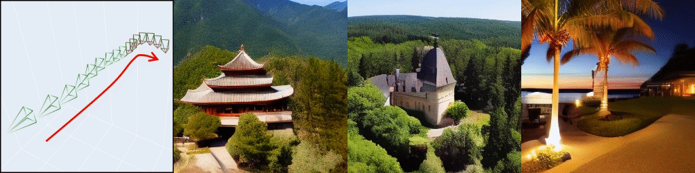
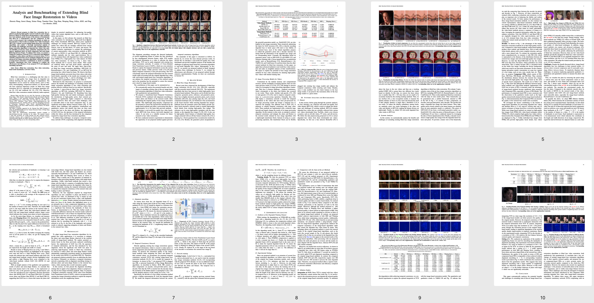
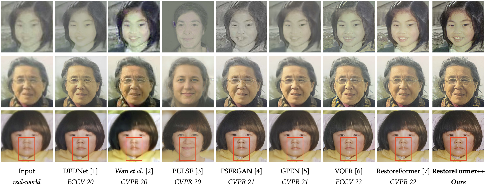
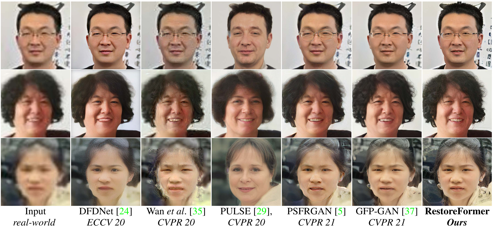
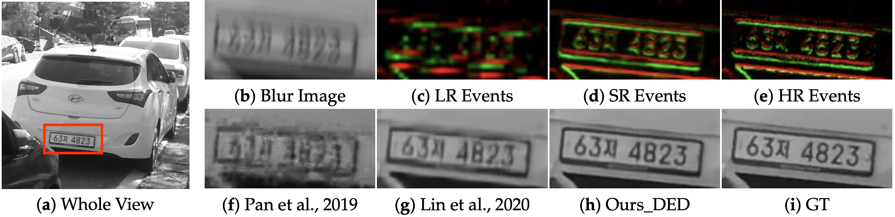
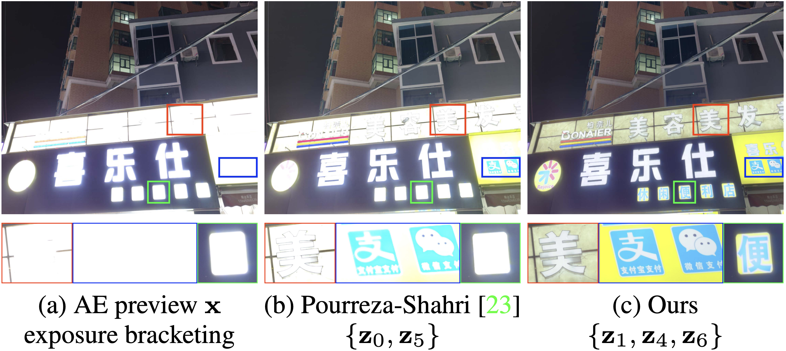
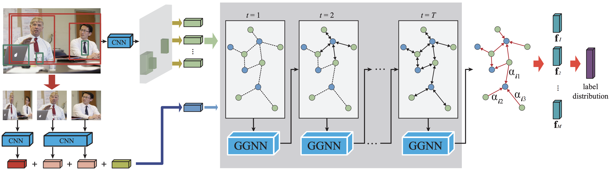
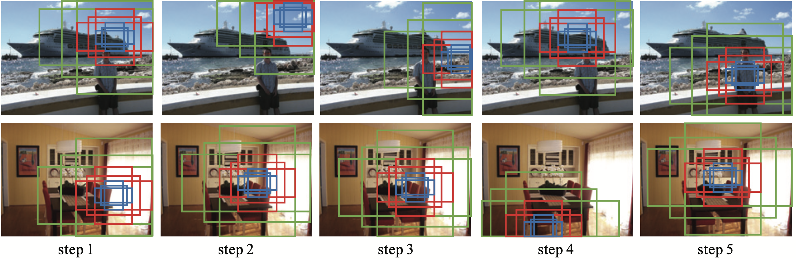
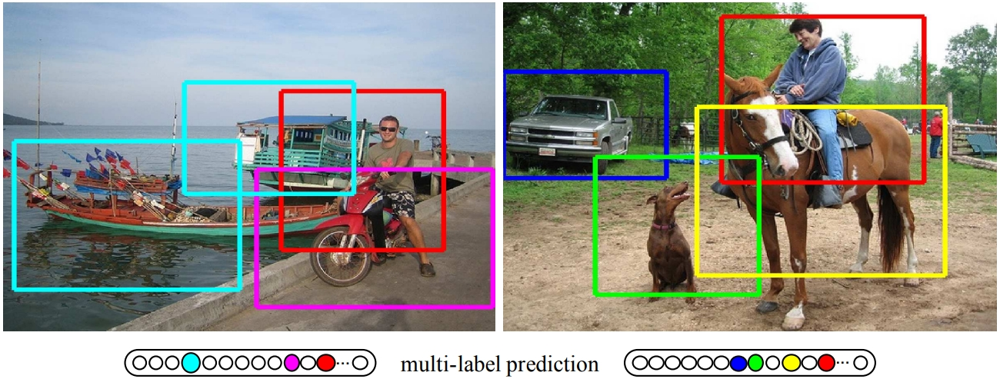

Zhouxia Wang
Research Fellow at MMLab@NTU
College of Computing and Data Science
Nanyang Technological University, Singapore.
Email: zhouzi1212 [at] gmail.com
Biography
I am currently a research fellow at MMLab@NTU, Nanyang Technological University, Singapore, working with Prof. Chen Change Loy. Before that, I received my Ph.D degrees from The University of Hong Kong, Hong Kong, China, in 2023, under the supervision of Prof. Ping Luo and Prof. Wenping Wang. I got my Master and Bachelor degrees from Sun Yat-sen University, Guangzhou, China, under the supervision of Prof. Liang Lin.
Research Interests
My research interests are in the field of computer vision and deep learning, with a focus on image/video understanding, generation, and editing.
Publications [Google Scholar]
Publications
-

MotionCtrl: A Unified and Flexible Motion Controller for Video Generation.
Zhouxia Wang, Ziyang Yuan, Xintao Wang, Tianshui Chen, Menghan Xia, Ping Luo, and Ying Shan
SIGGRAPH Conference, 2024.
@inproceedings{wang2024motionctrl, title={Motionctrl: A unified and flexible motion controller for video generation}, author={Wang, Zhouxia and Yuan, Ziyang and Wang, Xintao and Li, Yaowei and Chen, Tianshui and Xia, Menghan and Luo, Ping and Shan, Ying}, booktitle={ACM SIGGRAPH 2024 Conference Papers}, pages={1--11}, year={2024} }
-

StyleAdapter: A Unified Stylized Image Generation Model
Zhouxia Wang, Xintao Wang, Liangbin Xie, Zhongang Qi, Ying Shan, Wenping Wang, and Ping Luo,
IJCV, 2024.
@article{wang2024styleadapter, title={StyleAdapter: A Unified Stylized Image Generation Model}, author={Wang, Zhouxia and Wang, Xintao and Xie, Liangbin and Qi, Zhongang and Shan, Ying and Wang, Wenping and Luo, Ping}, journal={International Journal of Computer Vision}, pages={1--18}, year={2024}, publisher={Springer} }
-

Analysis and Benchmarking of Extending Blind Face Image Restoration to Videos
Zhouxia Wang, Jiawei Zhang, Xintao Wang, Tianshui Chen, Ying Shan, Wenping Wang, and Ping Luo,
TIP, 2024.
@ARTICLE{wang2024analysis, author={Wang, Zhouxia and Zhang, Jiawei and Wang, Xintao and Chen, Tianshui and Shan, Ying and Wang, Wenping and Luo, Ping}, journal={IEEE Transactions on Image Processing}, title={Analysis and Benchmarking of Extending Blind Face Image Restoration to Videos}, year={2024}, volume={33}, number={}, pages={5676-5687}, doi={10.1109/TIP.2024.3463414} }
-

RestoreFormer++: Towards Real-World Blind Face Restoration from Undegraded Key-Value Pairs.
Zhouxia Wang, Jiawei Zhang, Tianshui Chen, Wenping Wang, and Ping Luo
TPAMI, 2023.
@article{wang2023restoreformer++, title={RestoreFormer++: Towards Real-World Blind Face Restoration from Undegraded Key-Value Paris}, author={Wang, Zhouxia and Zhang, Jiawei and Chen, Tianshui and Wang, Wenping and Luo, Ping}, booktitle={IEEE Transactions on Pattern Analysis and Machine Intelligence (T-PAMI)}, year={2023} }
-

RestoreFormer: High-Quality Blind Face Restoration from Undegraded Key-Value Pairs.
Zhouxia Wang, Jiawei Zhang, Runjian Chen, Wenping Wang, and Ping Luo
CVPR, 2022.
@article{wang2022restoreformer, title={RestoreFormer: High-Quality Blind Face Restoration from Undegraded Key-Value Pairs}, author={Wang, Zhouxia and Zhang, Jiawei and Chen, Runjian and Wang, Wenping and Luo, Ping}, booktitle={The IEEE Conference on Computer Vision and Pattern Recognition (CVPR)}, year={2022} }
-

Image Deblurring Aided by Low-Resolution Events.
Zhouxia Wang, Jimmy Ren, Jiawei Zhang, and Ping Luo
Electronics (Invited), 2022.
@article{wang2022image, title={Image deblurring aided by low-resolution events}, author={Wang, Zhouxia and Ren, Jimmy and Zhang, Jiawei and Luo, Ping}, journal={Electronics}, volume={11}, number={4}, pages={631}, year={2022}, publisher={MDPI} }
-

Learning a Reinforced Agent for Flexible Exposure Bracketing Selection.
Zhouxia Wang, Jiawei Zhang, Mude Lin, Jiong Wang, Ping Luo, and Jimmy Ren
CVPR, 2020.
@inproceedings{Wang2020Learning, title={Learning a Reinforced Agent for Flexible Exposure Bracketing Selection}, author={Zhouxia Wang, Jiawei Zhang, Mude Lin, Jiong Wang, Ping Luo, Jimmy Ren}, booktitle={CVPR}, year={2020}, }
-

Deep Reasoning with Knowledge Graph for Social Relationship Understanding.
Zhouxia Wang*, Tianshui Chen*, Jimmy Ren, Weihao Yu, Hui Cheng, and Liang Lin
IJCAI, 2018.
@inproceedings{Wang2018Deep, title={Deep Reasoning with Knowledge Graph for Social Relationship Understanding}, author={Zhouxia Wang, Tianshui Chen, Jimmy Ren, Weihao Yu, Hui Cheng, Liang Lin}, booktitle={International Joint Conference on Artificial Intelligence}, year={2018} }
-

Recurrent Attentional Reinforcement Learning for Multi-label Image Recognition.
Tianshui Chen, Zhouxia Wang, Guanbin Li, and Liang Lin
AAAI, 2018.
@inproceedings{chen2018recurrent, title={Recurrent attentional reinforcement learning for multi-label image recognition}, author={Chen, Tianshui and Wang, Zhouxia and Li, Guanbin and Lin, Liang}, booktitle={Proceedings of the AAAI conference on artificial intelligence}, volume={32}, number={1}, year={2018} }
-

Multi-label image recognition by recurrently discovering attentional regions.
Zhouxia Wang*, Tianshui Chen*, Guanbin Li, Ruijia Xu, and Liang Lin
ICCV, 2017.
@inproceedings{wang2017multi, title={Multi-label image recognition by recurrently discovering attentional regions}, author={Wang, Zhouxia and Chen, Tianshui and Li, Guanbin and Xu, Ruijia and Lin, Liang}, booktitle={Proceedings of the IEEE international conference on computer vision}, pages={464--472}, year={2017} }
Academic Services
Conference Reviewer
CVPR, ICCV, NeurIPS, etc.
Journal Reviewer
TPAMI, TIP, IJCV, PR, etc.